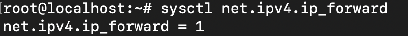
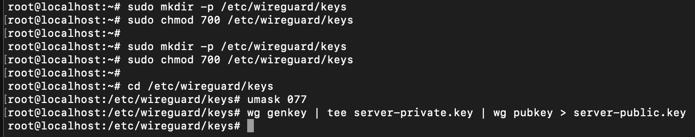
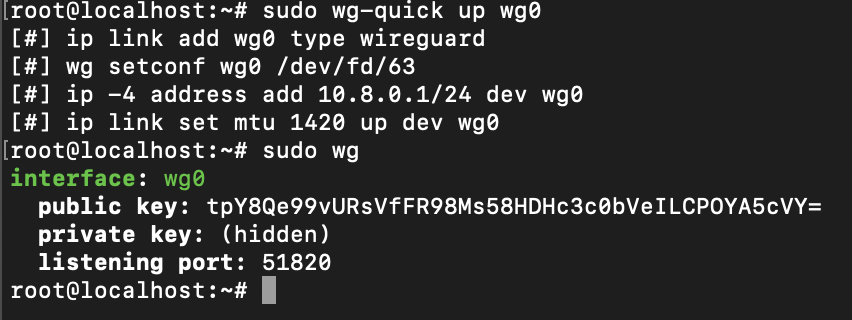
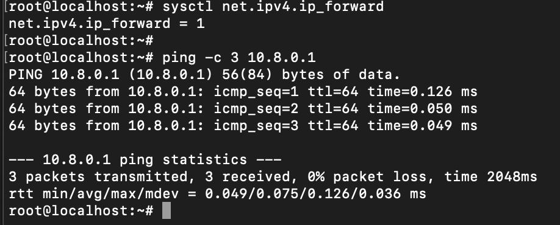

Part 2: Configuring the Server
When you open WireGuard (on your server or client) for the first time, you’ll likely see an empty interface or a blank list of “Tunnels.” That’s normal—you need to create your own configuration to tell WireGuard how to handle the VPN. Below are step-by-step instructions to configure your Linux server as a WireGuard VPN host.
Why These Steps Matter
-
Enable IP Forwarding
Allows your server to pass traffic between the VPN and other networks (like the internet). -
Generate Server Keys
WireGuard relies on a public–private key pair. Your server has one; each client has its own. -
Edit
wg0.conf
This is the main WireGuard configuration file where you set the VPN interface’s IP, port, and any connected clients (peers). -
Add Peer Public Keys
Tells the server which clients can connect by identifying them via their unique public keys. -
Open/Forward Firewall Ports
Ensures your server can receive VPN traffic on UDP port 51820. -
Activate the Interface
Brings the VPN “online,” making your server listen for client connections.
1. Enable IP Forwarding
- Open
/etc/sysctl.conf: - Find or add this line (make sure it’s not commented out):
- Save and exit (in nano, Ctrl+O then Enter, then Ctrl+X).
- Apply changes immediately:
- Confirm it worked:
You should see:

Success
Now IP Forwarding is enabled.
Why?
Without IP forwarding, your VPN server can’t relay traffic from connected clients to other networks.
2. Create a Secure Directory for Keys
Why?
This ensures your private key is protected. chmod 700 means only the root user can read or write in that directory.
3. Generate the Server’s Key Pair
- Navigate to the keys folder and set a strict umask:
- Generate the private and public keys: 
Example
This is an example for key generation process.
Why?
wg0.conf tells WireGuard how to configure the VPN interface (wg0). The [Interface] section is for the server; each [Peer] section defines a client.
5. Why Add a Peer’s Public Key?
You’ll eventually create a key pair for each client. In [Peer] sections, you include the client’s public key so the server:
- Recognizes the client’s packets.
- Encrypts data so only that client can read it.
We’ll cover this in Part 3, where you generate client keys and add those [Peer] entries to this file.
6. Open the Firewall Port (51820/UDP)
- Ubuntu with UFW:
- CentOS/RHEL with firewalld:
- Other Environments:
- Check your router or cloud provider’s firewall settings.
- Forward or allow UDP on port 51820 to this server.
Why?
Without opening the firewall, client traffic on port 51820 can’t reach your server.
7. Start the VPN Interface
Check status: You should see something like: Warning
A private key should never be made publicly available.
Why?
wg-quick applies the configuration file (wg0.conf) to create the wg0 network interface.
8. Enable WireGuard on Boot (Optional)
If you want the VPN to start automatically whenever the server reboots:
Why?
No need to manually bring wg0 up after every restart.
9. Validate Everything
- Confirm IP Forwarding:
Should be
1. - Ping the VPN Interface:
You’ll see replies from the server’s own VPN IP (
10.8.0.1). 
Example
Above screenshot shows an example of succeessful replies from the server's own VPN IP.
No clients are connected yet, but this ensures your server’s VPN interface is up and running.
What’s Next?
- Generate client keys and add their public keys to the server’s
[Peer]sections. - Part 3 will show you how to configure and connect your clients (e.g., Windows, macOS, mobile).
- Once a client is configured, you’ll see it listed under
sudo wgwith alatest handshaketimestamp when it’s connected.
Final Tips
- Keep
server-private.keysecret; only share the public key. - Use careful firewall rules to avoid locking yourself out.
- Check logs if something isn’t working:
sudo journalctl -u wg-quick@wg0on many distributions.
Now you’re all set to move on to Configuring Clients and set up your clients so they can connect to your newly configured VPN server!